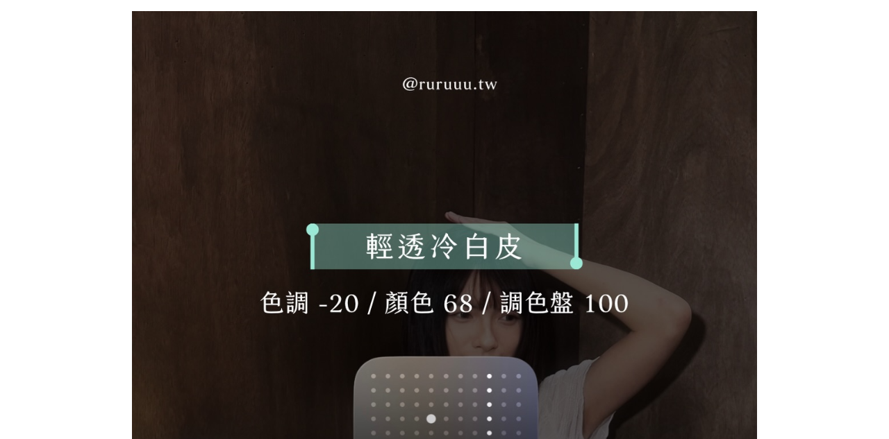

Threads｜iPhone 攝影風格參數卡：用「色調、顏色、調色盤」建立五種拍攝風格

一句話摘要
這不是「把照片後製成同一個濾鏡」的教學，而是為支援該功能的 iPhone 在拍攝前調整攝影風格的三個視覺傾向：**色調、顏色與調色盤**。圖卡提供了五組可直接當成實拍起點的數值。
貼文來源與可讀到的內容
欒帥分享的連結是 @sungwei__ 的「留」文，指向 @hiyifan 的轉貼；原圖卡署名為 **@ruruuu.tw**。本次可取得的七張輪播圖中，首尾為示意照片，中間五張為風格名稱與參數。貼文沒有提供製作人對數值原理、相容機型或 iOS 版本的說明，因此以下內容應視為**社群創作參考值**，不是 Apple 對任何膚色、光線或機型的官方建議。
五組參數速查
| 圖卡風格 | 色調 | 顏色 | 調色盤 | 適合先嘗試的畫面感 |
| --- | ---: | ---: | ---: | --- |
| 輕透冷白皮 | -20 | 68 | 100 | 明亮、偏冷、乾淨的人像起點 |
| 日落氛圍感 | -59 | 74 | 90 | 暖色夕陽、街景或金色光源 |
| 韓女風格感 | 37 | -30 | 100 | 較柔和、低彩度的韓系氛圍 |
| 富士相機感 | 100 | -48 | 39 | 壓低色彩、偏風格化的街拍感 |
| 秋季氛圍感 | 81 | 72 | 100 | 偏暖且飽和的秋日色彩印象 |
> 圖卡原文只列出「色調／顏色／調色盤」與數值，未交代其對應的完整設定路徑、相容版本或調整理由。不同 iOS 的中文介面名稱和選項位置可能不同。
實作時的正確期待
Apple 的 iPhone 使用手冊把相關拍攝功能與機型／系統版本一起管理；請以自己裝置的相機介面和當前 iOS 文件為準。實作上可採以下方式：
- **先確認相機是否有「攝影風格」選項。** 沒有該選項時，不要把圖卡數字硬套進一般相片編輯器的 HSL、飽和度或色溫滑桿；它們不是一對一的控制。
- **從一組風格開始實拍。** 例如人像先從「輕透冷白皮」測試；同一人物分別在窗邊、室內黃光與陰天各拍一張，觀察膚色與白牆是否偏色。
- **優先修正膚色與白色物體。** 畫面好看不等於膚色準確。若臉部灰、橘、紫或白衣變色，將數值往中間收斂，再測一次。
- **依情境建立自己的版本。** 圖卡的「富士相機感」或「日落氛圍感」比較適合當情緒化創作起點；文件、商品、食物紀錄或需要真實色彩的工作照，建議使用較中性的設定。
- **記得它影響拍攝當下的觀感。** 在重要拍攝前先做 A/B 測試；不要只因社群預覽好看，就讓整場活動都套用陌生風格。
為什麼同一組數字未必拍出同樣結果？
- 光源色溫、曝光、夜景演算法、鏡頭與主體材質，都會影響結果。
- iPhone 型號與 iOS 版本可能提供不同的攝影風格介面或調整方式。
- 社群圖卡沒有說明拍攝原始場景與是否另有後製，不能將成品視為參數的保證輸出。
- 名稱如「冷白皮」或「韓女風格感」屬審美描述，不應成為評價真實膚色的標準。
原始連結
- 欒帥分享的 Threads 短連結：https://www.threads.com/share/BANEjPEHd7/
- 轉貼文：https://www.threads.com/@sungwei__/post/DeBarYxiXHv
- 可讀到圖卡的 Threads 轉貼：https://www.threads.com/@hiyifan/post/Dd-1g2zElDC
- Apple iPhone 使用手冊：https://support.apple.com/zh-tw/guide/iphone/welcome/ios